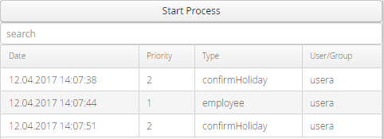
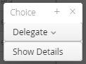
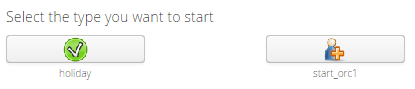

Work List Handler

Topic content
Introduction
Orchestra is very useful for creating technical processes. Until now it was not possible to interact with humans during a process, although this would have a benefit. If it is necessary to let a human decide what to do next or if a task needs to be done by a person so that the process can continue, Orchestra could not be used to handle the whole process. With the work list handler this is now possible.
The work list handler has several users and groups of users. These are necessary to define who should do a task. Furthermore, each task (called work list item) corresponds to a work list type. This type defines the basic structure of the task: how it can be used and how it is activated. The activation means how the item is displayed to the user, currently there are three possibilities: a simple formula type, which means that the item is a simple dialog with a caption, a text, input fields and buttons, a resource formula type that displays the content of a HTML resource or a external website that displays the website that corresponds to the in the type defined URL. For each type there can be parameters, input parameters that specify the correct display of the item and output parameters that are necessary for the process after the item is completed. An item that corresponds to such a type is displayed in the configured way, but has some more information that can vary for every item. The information that corresponds to the type itself is always the same for all items of this type. The information that the item holds is apart from its type the user or group of users that should work on the task, a priority, a name and values for all the input parameters that the type defines.
If the process now comes to state where it needs some information from a human, it can create a work list item and wait for the humans to complete it. After completion, the process knows the values of the output parameters it needs and can continue, so the process creates the item and waits for completion. If an error occurs or the human cancels the item, an error signal is sent to the process. Here it gets more clear why the work list types are necessary. The process defines the type with the parameters it needs and the parameters it can provide and how the task should be displayed for the user. In the running process, the concrete values of the parameters are known and depending on that, the configured user (that can depend on the process state) gets a new item to work on.
This is the standard mechanism for work list items. Apart from that, it is also possible to use a work list type for starting an Orchestra process. Such types do not have output parameters, the parameters that the user enters before he clicks on start are the input parameters for the process. In this case, the user selects a type that can be started (can be configured) in his UI and enters the necessary parameters. After sending the start request, the parameters are passed to the Orchestra process and starts it.
Apart from the basic mechanism, there are some more possibilities for configuration: for each credential the administrator can define which types he is allowed to handle. The administrator can also define escalation rules: if an item is not completed for the configured time, it is either aborted, delegated to a different credential or a notification e-mail is sent.
Using the Work List UI
If the administrator created an account, the user can log into the application with user name and password. A menu on the left side of your user interface can be seen then.

Work list UI menu
Dealing with Work List Items
The menu shows all items that the user can finish currently. Private items are the items that only this user can handle. For all groups that the user is member of, a menu entry "Group: <groupname>" is in the menu tree. There the items that can be handled by all members of the group are shown. Items are sorted by their work list type. Each item has as its parent in the menu tree the name of the type it corresponds to. In the image above the work list types are 1, 2 and 3. item1 is of type 1, item2 of type 3 and the items item3 and item4 are of type 2.
Clicking on an item opens the special UI for the type. There the user can enter, if possible, some information and finish the item on success or on failure. Right clicking an item opens the context menu:

Context menu
If the user wants to define a different credential for the item, he can select "Delegate". It is possible to give a private item to a group or different user, but also to give group items to other groups, users, or to himself (if he wants to tell the group that he will be responsible for the item). Selecting "Show Details" opens a new dialog with all available information for the current item, e.g. item description, creation time, priority and type description.
Starting Items and Processes
Selecting the menu entry "Start Process" will open a page like the following picture shows. The page for "Start item for user" is really similar.

Page for starting an Orchestra process
The pictures in the buttons can be uploaded in Orchestra designer, look at the topic Human Interaction for more information. Clicking on a button in the start process case activates the start UI for the work list type. The user can enter some information if possible and then click on the start button. The corresponding Orchestra process will start with the provided information then. In the start item for user case, a page opens where the current user can enter the user for the item, the description and priority and all input parameters.
Clicking on "Start Item" will add the item to the work list of the defined user.
See also